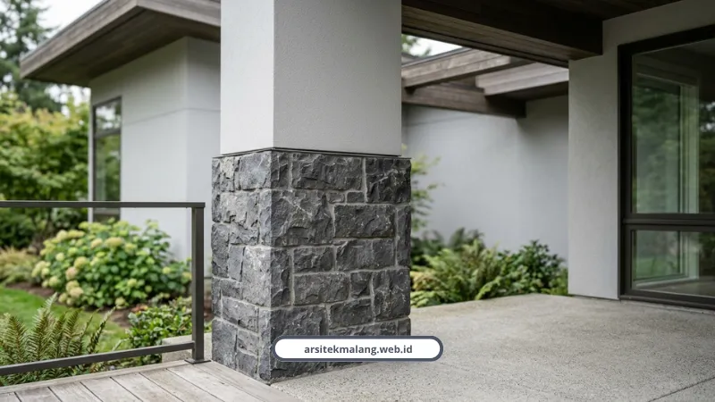

Ringkasan Inti
- Iklim tropis basah Malang dengan suhu 22,4–24,3°C memicu siklus muai-susut tinggi pemicu plesteran retak rambut dan jamur pada fasad.
- Tiga kayu solid unggulan untuk fasad rumah minimalis: Bengkirai kelas kuat I yang ekonomis, Merbau tahan rayap dan lembap, serta Kayu Ulin tahan cuaca ekstrem.
- Proporsi penggunaan aksen kayu direkomendasikan membatasi area sekitar 15 sampai 25 persen dari total bidang fasad depan.
- WPC (Wood Plastic Composite) menawarkan ketahanan UV, insulasi termal, serta efisiensi biaya jangka panjang tanpa perlunya pengecatan berkala.
- Cat berteknologi weatherproof elastomeric/acrylic anti-fungisida mampu memberi perlindungan maksimal 5–8 tahun di dataran tinggi Malang.
Daftar Isi Artikel
- Kenapa Fasad Rumah di Malang Gampang Retak dan Berlumut?
- Kayu Apa yang Paling Cocok untuk Aksen Fasad Rumah Minimalis?
- Apa Itu WPC dan Kenapa Diklaim Lebih Awet dari Kayu Biasa?
- Cat Eksterior Seperti Apa yang Wajib Dipakai untuk Iklim Lembap?
- Bagaimana Cara Pasang Material Kayu Eksterior Biar Tidak Cepat Lapuk?
- FAQ Seputar Material Eksterior Rumah Tahan Cuaca Malang
Material eksterior rumah yang paling tahan cuaca Malang adalah kombinasi kayu solid kelas kuat I, WPC anti lapuk, dan cat weatherproof anti jamur. Ketiganya kami pilih karena terbukti kuat menghadapi kelembapan tinggi dan hujan deras khas dataran tinggi Malang.
Kenapa Fasad Rumah di Malang Gampang Retak dan Berlumut?
Malang punya iklim tropis basah dengan kelembapan tinggi. Berdasarkan data BMKG, suhu rata-rata bulanan di Malang berkisar antara 22,4 sampai 24,3 derajat Celsius.
Radiasi UV yang tinggi di siang hari, disusul udara sejuk-lembap dan hujan lebat, memicu siklus muai-susut material. Efeknya, dinding plesteran retak rambut, cat mengelupas, dan lumut atau jamur gampang tumbuh.
Jadi pemilihan material eksterior rumah bukan soal estetika doang, tapi soal ketahanan jangka panjang menghadapi karakter cuaca lokal.
Kayu Apa yang Paling Cocok untuk Aksen Fasad Rumah Minimalis?
Ada tiga jenis kayu solid yang paling sering kami pakai, masing-masing punya karakter berbeda.
- Bengkirai (Yellow Balau), serat lurus padat, warna kuning kecokelatan, kelas kuat I dan awet II, harganya relatif ekonomis.
- Merbau, sangat tahan rayap dan kelembapan, gradasi warna cokelat kemerahan gelap yang terlihat mewah.
- Kayu Ulin atau ironwood, ketahanan tertingginya terhadap air hujan dan panas terik tanpa mudah lapuk.
Muhammad Musyaffa dari tim riset arsitektur kami menekankan soal proporsi pemakaian kayu ini.
"Untuk iklim Malang Raya yang sejuk namun bercurah hujan tinggi, penggunaan kayu Bengkirai atau Merbau sangat direkomendasikan sebagai aksen fasad. Kuncinya ada pada proporsi, batasi area kayu sekitar 15 sampai 25 persen dari total bidang fasad depan," jelas Musyaffa.

Apa Itu WPC dan Kenapa Diklaim Lebih Awet dari Kayu Biasa?
Wood Plastic Composite atau WPC adalah material komposit dari campuran serat kayu daur ulang dan polimer plastik. Material ini tahan radiasi UV, kelembapan tinggi, pelapukan, dan serangan rayap, plus punya sifat insulasi termal yang menjaga suhu bangunan tetap stabil.
Kenan Dimas Prasojo, peneliti utama studi efektivitas WPC dari Program Studi Arsitektur Universitas Mulawarman, menjelaskan alasan ilmiah di balik ketahanan ini.
"Campuran serat kayu dan plastiknya memberikan daya tahan superior terhadap cuaca ekstrem dan serangan serangga. Meski biaya investasi awalnya lebih tinggi, WPC sangat efisien secara ekonomis dalam jangka panjang karena tidak memerlukan perawatan intensif seperti pengecatan ulang berkala," kata Prasojo.
Sebagai pembanding, ada juga papan semen fiber atau Conwood yang berbahan dasar semen dan serat selulosa. Bedanya dari WPC yang lentur, Conwood terasa lebih solid, kaku, dan unggul dalam ketahanan terhadap panas serta api.
Catatan Arsitek Malang
Jika ingin mengombinasikan material kayu solid dan WPC pada fasad yang sama, letakkan kayu solid di area yang terlindung tritisan atap atau kantilever lantai atas. Sedangkan WPC atau Conwood dipasang pada bidang dinding luar yang langsung terpapar tempias air hujan dan sinar matahari terik.
Cat Eksterior Seperti Apa yang Wajib Dipakai untuk Iklim Lembap?
Pilih cat berteknologi weatherproof, elastomeric atau acrylic, anti-fungisida, dan tahan alkali untuk melapisi dinding acian. Teknologi seperti Powerflexx membantu menutup retak rambut, sementara Hydroshield menjaga dinding dari rembesan air hujan.
Indah Runingsa, seorang stylist dan interior designer, menegaskan pentingnya lapisan pelindung ini.
"Memilih cat eksterior bertipe anti-jamur dan anti-lembap sangat krusial untuk memberi perlindungan maksimal pada tembok rumah, terutama di daerah dengan tingkat kelembapan udara yang tinggi agar tidak merusak struktur dinding," ujar Indah.
Kombinasi batu alam seperti batu andesit abu gelap atau batu candi, dipadukan cat warna netral seperti putih, beige, atau abu-abu muda, juga jadi favorit karena memberi ilusi rumah tampak lebih lapang, bersih, dan timeless. Kami sudah kumpulkan 10 inspirasi fasad rumah minimalis modern yang memadukan elemen-elemen ini.
Bagaimana Cara Pasang Material Kayu Eksterior Biar Tidak Cepat Lapuk?
Detail pemasangan sering jadi penyebab kayu cepat rusak, bukan kualitas kayunya. Dua hal ini wajib diperhatikan tukang saat instalasi.
- Beri celah ekspansi minimal 3 sampai 5 mm antar panel kayu atau WPC di balik rangka, supaya air tidak menggenang.
- Aplikasikan ulang pelindung kayu berbahan water-based setiap 12 sampai 18 bulan sekali, terutama setelah musim hujan.
Untuk fasad berbahan sandwich panel modular, material ini punya inti isolasi polyurethane atau rockwool yang mampu meredam panas hingga mengurangi pemakaian AC sebesar 30 sampai 50 persen. Cocok untuk yang ingin bobot ringan sekaligus kedap air.
Kalau tertarik menerapkan kombinasi material ini, konsep dan proporsinya sudah kami jabarkan di panduan desain rumah minimalis Malang yang membahas tata ruang sekaligus fasadnya secara menyeluruh.
Pemilihan material eksterior yang tepat bisa menghemat biaya perawatan rumah sampai puluhan juta rupiah dalam 10 tahun ke depan. Salah pilih material di awal justru bikin biaya perbaikan berulang tiap musim hujan.
Tim kami biasa membantu menentukan kombinasi material yang paling pas dengan bujet dan gaya rumah Anda. Cek layanan desain dan konsultasi material kami di sini untuk mulai konsultasi gratis.
FAQ Seputar Material Eksterior Rumah Tahan Cuaca Malang
Berapa Lama Cat Eksterior Weatherproof Bertahan di Malang?
Cat weatherproof berkualitas dengan lapisan anti-jamur biasanya bertahan 5 sampai 8 tahun sebelum perlu dicat ulang, jauh lebih lama dibanding cat biasa yang bisa pudar dan mengelupas dalam 2 sampai 3 tahun di iklim lembap.
Apakah Material WPC Lebih Mahal dari Kayu Solid?
Biaya awal WPC memang lebih tinggi dari kayu solid biasa. Tapi dalam hitungan 5 sampai 10 tahun, WPC justru lebih hemat karena minim perawatan dan tidak perlu pengecatan ulang tiap tahun seperti kayu.
Butuh Rekomendasi Material Eksterior yang Sesuai Kondisi Lahan Anda?
Konsultasikan pemilihan material tahan cuaca, visualisasi 3D fasad presisi, dan kalkulasi RAB bersama tim arsitek berlisensi kami.

Naura Regyna Putri
Penulis & Tim Riset Arsitektur Maroon Arsitek Malang, spesialis material tahan cuaca ekstrem, fasad tropis minimalis, dan teknologi insulasi bangunan.